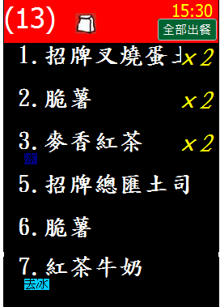

我勾選套餐畫線區隔也有勾同單項合併
點了兩個不一樣的套餐 備貨那不會把一樣的東西合併
如下

還有一個問題 如果我點套餐 我出單紙可以顯示A號套餐就好(不要顯示出細項),但備餐那又可以看到細項@@"
我勾選套餐畫線區隔也有勾同單項合併
點了兩個不一樣的套餐 備貨那不會把一樣的東西合併
如下

還有一個問題 如果我點套餐 我出單紙可以顯示A號套餐就好(不要顯示出細項),但備餐那又可以看到細項@@"
您好
1.如果您勾選了套餐畫線區隔
不同套餐為了分隔 備餐畫面是不會放在一起的 請參考
http://ico.tw/QA/index.php?qa=834
2.您可以使用 [不印] [不備餐] 達到這個目的
範例如下
{主選單}
套餐類
A號餐[模式:套餐][$70]
A號餐[不備餐]
雞塊薯條[$35][不印]
吐司[$30][不印]
巧克力[顏色:16763904]; 草莓[顏色:65535];起司蛋[$10] [顏色:13408767]
折扣[$-15][不印]
套餐飲料[不印]
[品項名稱]紅茶[$20];奶茶[$20];綠茶[$20];可樂[$25];豆漿[$25];薏仁漿[$30];
中杯;大杯[$5][顏色:16737843];
冰[顏色:16763904]; 溫[顏色:65535]; 熱 [顏色:255];
以上面例子 套餐飲料不標註不印
便會印出所選擇的飲料
但只能分兩個品項印 無法印在同一行
如果只考慮印出的結果,也可以更改品項名稱也能達到您想要的效果
{主選單}
套餐類
A號餐[模式:套餐][$70]
雞塊薯條[$35][不印]
吐司[$30][不印]
巧克力[顏色:16763904]; 草莓[顏色:65535];起司蛋[$10] [顏色:13408767]
折扣[$-15][不印]
套餐飲料
[品項名稱]A號餐-紅茶[$20];A號餐-奶茶[$20];A號餐-綠茶[$20];
中杯;大杯[$5][顏色:16737843];
冰[顏色:16763904]; 溫[顏色:65535]; 熱 [顏色:255];